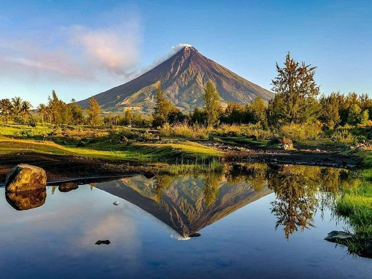

Mayon Volcano
The most perfectly shaped volcano in the world, and the Philippines' most active.
Home / Destinations / Mayon Volcano · Albay, Bicol Region
About Mayon Volcano
Mayon rises above the plains of Albay with a cone so symmetrical that it is often called the most perfectly formed volcano on Earth. On clear mornings the summit stands out against the sky; later in the day clouds often wrap around it.
It is also the country's most active volcano. Eruptions over the centuries have shaped the land and the culture of Bicol, and the volcano is monitored closely by PHIVOLCS.
What to see
- Cagsawa Ruins: the bell tower that survived the 1814 eruption, framed by the volcano.
- Lignon Hill: a viewpoint over Legazpi City with Mayon behind it.
- Mayon Skyline: a scenic road that gets you closer to the slopes.
Travel tip
Because of volcanic activity, always check the latest PHIVOLCS advisory before you go. A permanent danger zone surrounds the crater, and you should stay out of it.
Photo gallery
Watch: Mayon Volcano
If the embedded video shows Error 153, open this website through a local web server (for example VS Code Live Server) instead of opening the HTML file directly.
Open this video on YouTube (opens in a new tab)
Want more? Search for Mayon Volcano videos on YouTube (opens in a new tab).
Things to book
ATV lava trail tour
Ride across old lava flows on the slopes of Mayon.
Find tours for ATV lava trail tour (opens in a new tab)Legazpi and Cagsawa day tour
Cagsawa Ruins, Lignon Hill and other classic viewpoints.
Find tours for Legazpi and Cagsawa day tour (opens in a new tab)Mayon Skyline drive
A scenic road that takes you closer to the slopes.
Find tours for Mayon Skyline drive (opens in a new tab)Bicol food and culture tour
Taste local dishes and learn about life near the volcano.
Find tours for Bicol food and culture tour (opens in a new tab)
Plan and book your trip to Mayon Volcano
Compare tours and places to stay on these booking sites. Prices and availability change, so check the details before you pay.